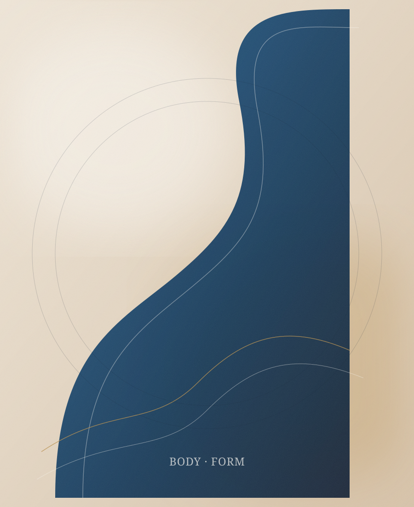

Breast Surgery
تجميل الصدر
عمليات تجميل الصدر من أكثر الإجراءات التي تعيد التوازن إلى القوام. سواء كان الهدف استعادة الحجم بعد الرضاعة، أو رفع الترهل، أو تقليل الحجم الزائد، تُصمَّم الخطة حسب التشريح والحالة الصحية.

عمليات تجميل الصدر من أكثر الإجراءات التي تعيد التوازن إلى القوام. سواء كان الهدف استعادة الحجم بعد الرضاعة، أو رفع الترهل، أو تقليل الحجم الزائد، تُصمَّم الخطة حسب التشريح والحالة الصحية.
